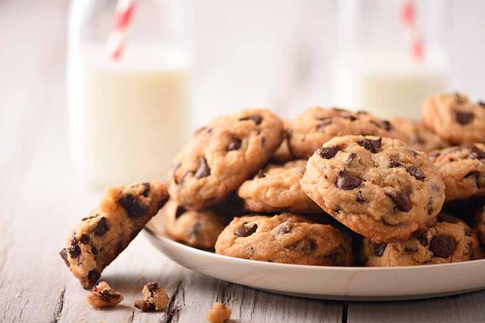
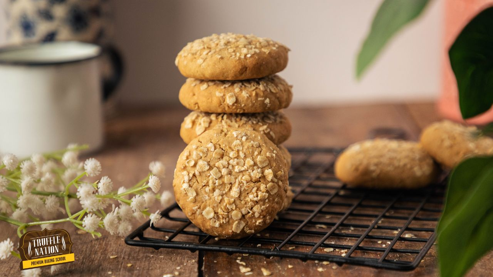

Chocolate Chip Cookies
Classic soft and chewy cookies loaded with chocolate chips.
- Cream butter and sugar, then mix in eggs and vanilla.
- Add flour, baking soda, and chocolate chips.
- Scoop onto a baking tray and bake at 180°C for 10–12 minutes.
- Cool before serving.
More Info
Video
Shortbread Biscuits
Buttery, crumbly biscuits perfect for tea time.
- Mix flour, butter, and sugar into a dough.
- Roll and cut into shapes.
- Bake at 160°C for 15–20 minutes until golden.
- Let cool on a wire rack.
More Info
Video

Oatmeal Raisin Cookies
Hearty cookies with oats, raisins, and a touch of cinnamon.
- Cream butter and sugar, mix in eggs and vanilla.
- Add flour, oats, raisins, cinnamon, and baking soda.
- Drop spoonfuls on a baking sheet and bake at 175°C for 10–12 minutes.
- Cool and enjoy.
More Info
Video